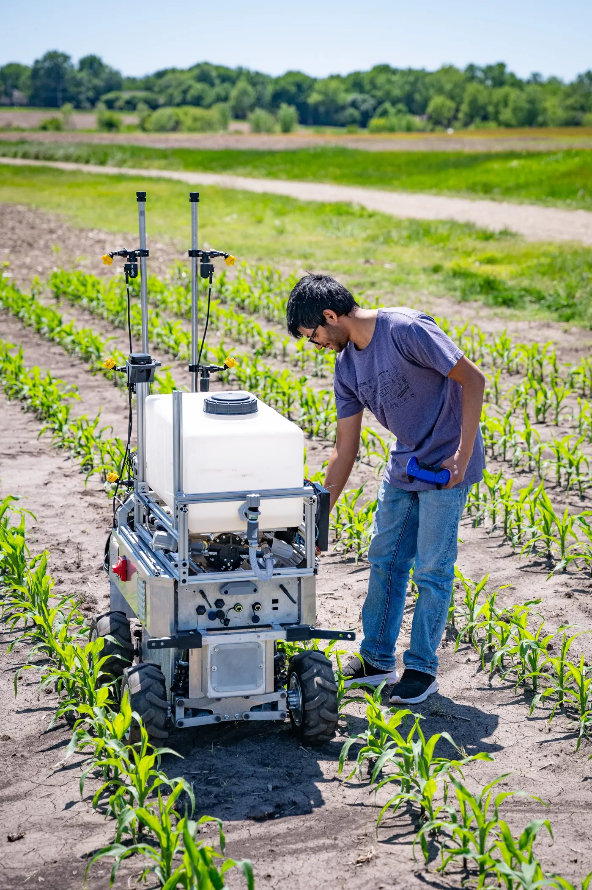

Robots that understand
the fields they work in.
I'm Sudan — a graduate researcher at Kansas State University. I design and build field robots end-to-end, from mechanical platform and motor control through ROS2 software and on-robot computer vision.

I like work that spans every layer — where a hardware choice, a controller gain, and a detector threshold all have to agree.
I just finished an M.S. in Biological & Agricultural Engineering with a Field Robotics focus (advisor: Dr. Ajay Sharda) and am continuing into a Ph.D. leaning toward on-robot computer vision and edge AI for scouting and precision interventions.
My work sits across the full stack: CAD and fabrication, CAN-level motor control, ROS2 bringup and perception, model training and TensorRT deployment on NVIDIA Jetson, and sim-to-real validation in Isaac Sim. Before graduate school I designed ASME-code pressure vessels in industry and researched prosthetic design and gait analysis.
Kansas State University · FarmsLab
Edge AI & Computer Vision · Dec 2026 – Present
B.E., Mech. Eng. · Kathmandu University
A few things I've built.
Field robots, on-robot perception, and the hardware around them. Each tile links to a short write-up of what I did and what we used.
Skid-Steer Field Robot
Designed and fabricated an under-canopy skid-steer UGV: mechanical platform, four-motor CAN-bus drive, and an on-robot C++ ROS2 controller stack.
Isaac Sim Digital Twin & Sim-to-Real
Digital twin of the skid-steer platform and a rosbag-driven sim-to-real alignment pipeline; methodology written up as an IEEE manuscript.
Real-Time Vision-Guided Precision Sprayer
Transformer-based pest detection on an embedded GPU, stereo 3D localization with an EKF, and MOSFET-driven solenoid spraying.
Handheld Edge-AI Crop Phenotyping Device
A portable edge-AI scout for breeders and farmers. 3D-printed prototype, ROS2 middleware, 30 fps plant detection and tracking.
Let's talk.
Happy to chat about field robotics, on-robot perception, summer internships, or anything in the project list above.